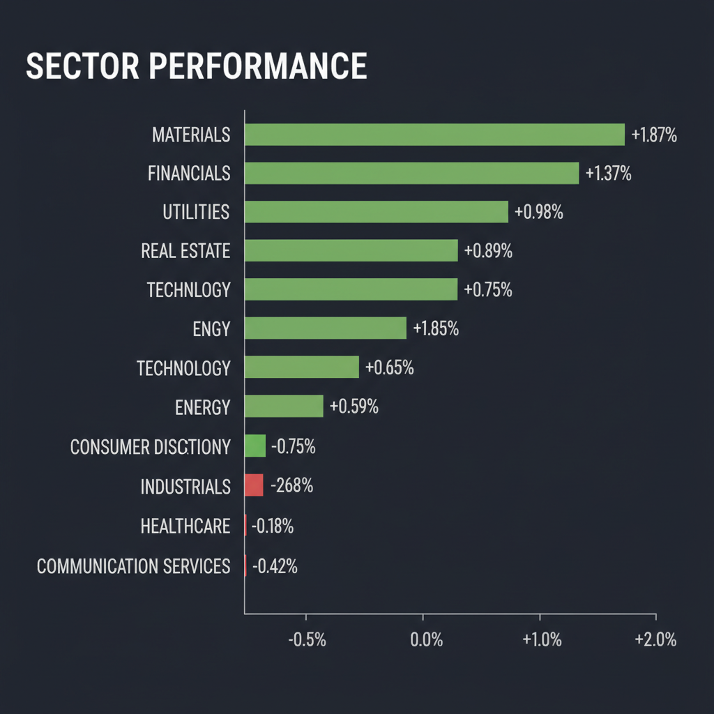
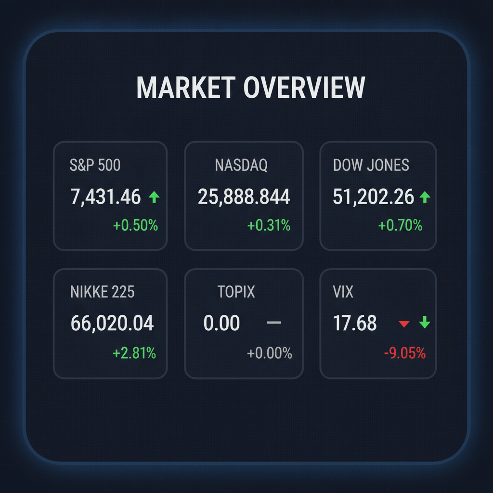

Daily Investment Report - 2026-06-13
Generated: 2026/6/13 7:39:09


投資チームミーティングの結論に基づき、最終レポートを作成いたしました。
1. エグゼクティブサマリー
- 地政学的リスクの緩和期待と宇宙開発IPOが市場心理を押し上げ、リスクオンムードが拡大しています。
- 一方で、指数は高値圏にあり、実体経済と株価の乖離およびボラティリティ再燃のリスクが顕在化し始めています。
- 今後は指数への依存を避け、堅固なキャッシュフローを伴うニッチ・成長株への選別投資が推奨されます。
2. 注目銘柄リスト
強気（買い推奨）- 平均スコア7.0以上
- 日東紡績 (3110) [スコア 8.2/10]: AIデータセンターの冷却・電力効率化に不可欠な素材で実需が強く、構造的な成長局面にあるため推奨。
- AEG ID (非公開・買収先として注目) [スコア 7.5/10]: 産業用RFIDの需要拡大により業界再編の核となっており、技術的な市場シェアが拡大しているため。
中立（様子見）- 平均スコア4.0〜6.9
- FedEx (FDX) [スコア 5.5/10]: 業績回復の転換点にあるが、世界的な景気減速の影響を受けやすく、現在は動向を見極めるべき段階。
- 味の素 (2802) [スコア 4.8/10]: データセンター向け特需で注目されるが、既に市場の期待が株価に織り込まれており、割高感があるため。
弱気（警戒）- 平均スコア4.0未満
- Lotus Technology (LOT) [スコア 3.2/10]: 決算発表の一時停止が発表されており、情報の不透明さと経営上の不確実性が極めて高いため。
3. セクター推奨ランキング
1.
金融セクター: IPO市場の活況とリスクオン相場による投資銀行部門の収益向上が見込まれるため。
2.
素材・産業セクター: 宇宙開発や防衛関連インフラの再編が進む中で、中長期的な実需が見込めるため。
3.
エネルギーセクター: 平和的合意による供給安定はプラスだが、地政学リスク再燃時の価格変動リスクを考慮し中立。
4. 今週の注目イベント
- 6月15日以降: 米国FOMC後の新議長による初会見
- 随時: 日銀の金融政策決定会合における利上げの是非
- 随時: 米国・イラン和平交渉の署名進捗およびトランプ氏の反応
5. リスク要因
- 地政学的不確実性: 米イラン和平交渉の破綻リスクが残存しており、エネルギー価格の急騰を招く恐れがあります。
- 需給の乖離: 海外投資家が日本株を売り越す中、個人投資家の買いに依存する需給構造は調整局面で脆さを露呈します。
- テーマ相場の崩壊: AI・宇宙関連への過剰投資が利益を圧迫した場合、高PER銘柄から連鎖的な投げ売りが発生するリスクがあります。
6. アクションアイテム
- 利益が出ている成長株の一部を利食いし、キャッシュポジションを30%程度まで引き上げてください。
- ストップロス注文を各銘柄の25日移動平均線直下に機械的に設定し、損切りを徹底してください。
- ボラティリティ上昇に備え、VIX関連ETFの買い付けやゴールド等の安全資産への分散を検討してください。
7. 米国株インデックス戦略
- 現在の市場環境の評価: ホールド継続を基本としつつ、高値警戒感から新規の積極買いは控え、ポートフォリオのリバランスを検討すべき時期です。
- 今後1〜3ヶ月の見通し: 楽観的なモメンタムは継続しやすいが、日銀の政策転換や米国の実体経済指標（小売決算等）次第で急激な調整のリスクがあります。
- 積立投資への影響: 時間分散の観点から定期積立は継続すべきですが、高値圏での購入となるため、追加の一括投資は避けてください。
- 注意すべきイベント: FOMC後の金利見通し変更と、それに伴う為替市場の変動（円高による指数寄与度への影響）を最優先で注視してください。
- リスクシナリオ: 和平交渉の破綻とインフレ再燃が重なった場合、指数は10%以上の急落局面を迎える可能性があります。その際は、パニック売りをせず、あらかじめ確保したキャッシュで優良銘柄を拾う準備をしてください。